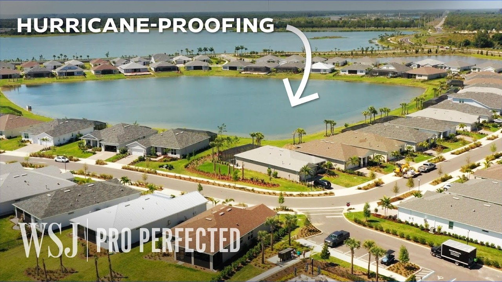

【华尔街日报：飓风防护城市背后的工程奥秘】
Summary: Babcock Ranch, a town hit by four hurricanes, avoided flooding due to innovative water management, elevation strategies, and inland location, contrasting traditional grid designs that worsen flooding.
摘要： 巴布科克牧场虽遭遇四次飓风却未受洪水侵袭，得益于创新的水系管理、海拔策略及内陆位置，与传统网格开发加重洪涝形成鲜明对比。

⏱️ Estimated Reading Time: 10 min
📚 四级生词 📚 六级生词 📚 雅思生词 📚 托福生词 📚 专八生词 📚 SAT生词 📚 考研生词 📚 GRE生词 📚 高考生词 📚 其它生词生词
Of the 15 most damaging hurricanes in US history, only two were category five.
在美国历史上破坏性最强的15场飓风中，仅两场为五级飓风。
Hurricane categories are based on wind speeds and only wind speeds.
飓风等级仅依据风速划分。
But what often creates the most damage is water.
但造成最大破坏的往往是水。
Given all of the new codes, most homes can really survive category five winds.
得益于新建筑规范，多数房屋能承受五级飓风的风力。
However, they can also float away fully intact.
然而，它们也可能完好无损地被冲走。
Yet this one town, Babcock Ranch, has been hit by four hurricanes.
但巴布科克牧场这座小镇虽遭遇四次飓风袭击。
Basically came out unscathed.
基本毫发无损。
There was no flooding at all.
完全未发生洪水。
So, we asked the engineer who helped build this town to break down its hidden designs.
因此，我们请参与建造的工程师揭秘其隐藏设计。
Here's Babcock Ranch from above, with four mires and Cape Coral nearby.
这是俯瞰的巴布科克牧场，附近有四片沼泽和珊瑚角市。
For a lot of the surrounding areas, everything has developed very grid light, which is traditional because it utilizes the land the best.
周边多数区域采用传统网格化开发以最大化土地利用。
But this type of development doesn't always consider how nearby wetlands expand and absorb excess flood water.
但这种开发未充分考虑邻近湿地的扩张及洪水吸收能力。
You do have a waterway that flows right through here.
原有水道贯穿此地。
These areas that used to act as a sponge are kind of all taken up by development.
曾如海绵般的区域现已被开发占据。
And so these areas are very prone to flooding.
因此这些区域极易发生洪涝。
Babcock Ranch took a different approach.
巴布科克牧场另辟蹊径。
These photos show part of the ranch before and after it was developed.
这些照片展示开发前后的牧场局部。
All the dark patches are wetlands.
暗色区域均为湿地。
And you can see how the ranch was built around them, leaving some areas where they'll flood and connect untouched.
可见牧场绕湿地而建，保留其自然泛洪连通功能。
It was very important to us to utilize the existing water systems.
利用原有水系对我们至关重要。
But it didn't just leave these systems intact.
但不仅保留原有系统。
Babcock Ranch also mimicked them.
巴布科克牧场还仿效了它们。
To do this, they turned the ponds and lakes into a network of bowls.
为此将池塘湖泊改造成碗状网络。
So the way the entire system is designed is each of these lakes acts like a very bottom of a bowl.
整个系统中每个湖泊如同碗底。
And the rest of the system is built up around the edges of the bowl, and it sits a little bit higher.
其余部分沿碗边建造且略高。
So you have the houses at the highest point, and the houses the water falls off of it, and it goes down into the bowl.
房屋位于最高处，雨水沿坡流入碗中。
Each bowl is connected through a series of pipes underground.
碗间通过地下管道相连。
That way, if one lake fills up, it won't spill over.
这样单个湖泊满溢时不会外泄。
It'll just drain to a different bowl with more capacity.
而是排向容量更大的其他碗。
Then if there's a blockage, all these extra pipes help ensure the water keeps flowing.
即便堵塞，备用管道也能保障水流畅通。
And Babcock's system lets them control the water levels, allowing them to drain the bowls before hurricanes to accommodate the extra water, which is eventually discharged down to the river.
该系统可调控水位，飓风前排空碗区以容纳额外雨水，最终排入河流。
There is a ditch that runs right through the middle of the property, and all the way out to the river here.
一条沟渠横穿地产中部直达河流。
Traditional design would say to move the water through that ditch as fast as possible.
传统设计会要求快速排水。
What we've done at Babcock is we've allowed that water to come out to the fringes of the development and fill in this entire area.
我们让水流至开发边缘并蓄满整个区域。
Slowing the water down lets the wetlands absorb some of the water.
减缓流速使湿地吸收部分水量。
Preventing an onslaught of storm water from inundating the river and surrounding areas.
避免暴雨径流淹没河流及周边。
The next key to managing hurricane flooding is elevation.
另一防洪关键是海拔设计。
Babcock ranch's natural elevation ranged from 12 to 38 feet.
牧场自然海拔12至38英尺不等。
So generally, anything that falls within the development footprint overall was elevated.
因此开发范围内所有设施均被抬高。
But certain areas of the town were elevated higher than others, directing water towards specific collection points.
但部分区域更高，以引导水流至集水点。
The smaller roads were elevated by about 3.5 feet.
小路抬升约3.5英尺。
The larger roads were elevated by approximately 4.5 feet.
大路抬升约4.5英尺。
And then any of the homes were elevated by about 5 feet.
住宅则抬升约5英尺。
Now, the majority of the community is at or above 30 feet.
如今社区大部分位于30英尺以上。
In a 100-year storm event, the ranch would face about 14 inches of rainfall, and the water levels would rise by about 4 feet.
百年一遇暴雨中，牧场将面临14英寸降雨，水位上涨约4英尺。
And all of the homes on Babcock would be one foot above the water level.
所有住宅仍高于水位1英尺。
Its grocery store and some offices, two feet above it.
超市和办公室高于2英尺。
So if things were to be catastrophic, we want to be able to bounce back as quick as possible.
即便灾难发生，我们也能快速恢复。
So being able to go get your groceries, being able to go to work.
保障购物和工作需求。
Those types of things need to be the first accessible places.
这些场所需最先恢复运转。
But while all the buildings would be safe, the roads would be completely flooded by design.
尽管建筑安全，道路会按设计被淹没。
At a certain point, they're going to go underwater because they were what was built the lowest.
作为最低设施，道路将没入水中。
We can intentionally use those roads to help direct the flow, to allow the water to connect between the lake, and the roads away from the homes and the structures.
我们利用道路引导水流连通湖泊，远离住宅建筑。
But much of the ranch's success also lies in its location.
成功还归功于地理位置。
It's about 20 miles inland from Florida's West Coast.
距佛罗里达西海岸约20英里。
And that distance alone is enough to mostly protect it from the deadliest force in a hurricane, storm surge.
这段距离足以抵御飓风最致命的风暴潮。
As hurricanes move inland, they push a huge volume of water ashore at high speeds and with immense force.
飓风登陆时以高速巨力推水上岸。
It's going to pull the water from the gulf and push it all the way inland this way.
它将吸取海湾水量向内陆推进。
Take Hurricane Helene.
以飓风海伦为例。
Hurricane Helene kind of took the path here and made landfall around the Keaton Beach Steinehatchee area.
其登陆基顿海滩-斯泰因哈奇区域时。
Where 80% of the buildings were completely destroyed from storm surge, being 12 to 16 feet overall.
12至16英尺的风暴潮摧毁了80%建筑。
But as a storm moves inland, so a 9-foot storm surge on the beach, for example, would get up to the rafters in the house.
但9英尺海滩风暴潮向内陆推进时仅达房屋椽子高度。
What you'll see is a 9-foot storm surge here is only a 3-foot storm surge here.
此处9英尺风暴潮在此处仅剩3英尺。
Florida's coastline is lined with mangroves that act as a natural buffer, slowing down the storm surge and trapping debris.
海岸红树林作为天然缓冲带减缓潮速并拦截杂物。
Anything that's creating friction for that water is going to also help slow that water down.
任何增加水流摩擦的物体都有助减速。
But far away from the dangers of the coast, rainfall still poses a significant threat.
但远离海岸的内陆仍面临暴雨威胁。
About 25% of Hurricane deaths in the U.S. occurred in inland counties.
美国25%飓风死亡发生在内陆县。
As we've seen more and more storms that are exceeding 100-year events across the United States, it appears more and more likely that designing to a 100-year storm event is not going to be enough to keep a home from flooding over the course of its built life.
随着超百年一遇暴雨频发，按此标准设计已不足以保证房屋终身免遭洪水。
There's a 1% chance every year that a 100-year storm event will happen.
百年一遇暴雨每年发生概率1%。
And since Amy started working on this project, we've seen 3-100-year storm events.
项目启动以来已遭遇3场此类暴雨。
Hurricanes have cumulatively caused over 7,000 deaths and cost $1.5 trillion in damages since 1980.
1980年以来飓风累计致7000余人死亡，损失1.5万亿美元。
And Florida is one of the most vulnerable places in the country.
佛罗里达是全美最脆弱地区之一。
So, while the current laws mandate many homes be built to withstand a 100-year event, some developers are building beyond the requirement.
尽管现行法规要求房屋抵御百年一遇灾害，部分开发商已超越标准。
Just look at Hunter's point, a new coastal development.
以新沿海项目亨特角为例。
It was required to build at an elevation of 10 feet above the flood zone, but instead, it was built 16 feet above it.
要求高出洪区10英尺，实际建造16英尺。
So, during Hurricane Helene, the streets flooded, but the homes remain dry.
飓风海伦期间街道被淹，住宅保持干燥。
Each one that sold has gone for upwards of a million dollars.
每套售价超百万美元。
There is a larger push from people who have experienced flooding situations to purchase those types of homes.
曾受灾民众更倾向购买此类房屋。
I think ultimately we can prevent the amount of destruction that we've been seeing with hurricanes.
相信我们终能减少飓风破坏。
People are going to want to move to Florida no matter what.
无论怎样人们仍会迁居佛罗里达。
We're prepared to be more resilient and move on quicker.
我们正提升韧性以加速恢复。
And that's a big part of making sure that we're developing responsibly if we are going to develop an area that is subject to such extreme events.
在极端天气频发区域，负责任开发至关重要。